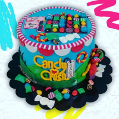
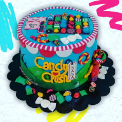
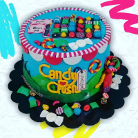
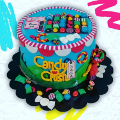

 

Las tortas en fondant son el aliado ideal a la hora de celebraciones al aire libre. Permiten, por su versatilidad, realizar hermosos modelados que se ajusten al evento
Las tortas en crema son el aliado ideal a la hora de celebraciones en espacios cerrados con temperaturas controladas inferiores a 21 °C o en exteriores en climas fríos. Nuestra Buttercream es de sabor y texturas ligeros, elaborada en base a un delicioso merengue suizo
Tenemos variedad de galletas ya sea en su versión original o especiales decoradas en combinación con la torta. Se venden por docenas. No son libres de gluten.
Son los acompañantes ideales para las tortas en sus eventos. Variedad de sabores y rellenos. Se decoran tanto con fondant como con Buttercream. Todo en armonía con la torta. También pueden encargarse solos. Se venden por docenas.
Deliciosos postres fríos para compartir en familia o disfrutarlos en solitario cuando se antoje un dulcito. Quesillos, Tocinillos del cielo, Tortas 3 leches, Cheesecakes, Pies. Se venden en pieza completa de 16 o 24cm de diametro. Los profiteroles se venden en torres de 20 y 30 piezas